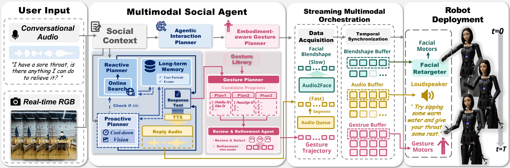

Abstract
Natural face-to-face human–robot interaction requires a robot to understand an evolving social situation, decide when to engage, and express its intent through coordinated physical behavior. Yet existing approaches rarely close this loop: foundation-model agents provide increasingly capable multimodal reasoning and memory but remain largely disembodied, while expressive virtual agents do not face the physical constraints of real robots, and physical social robots typically address social reasoning and embodied expression only partially.
We present ARISE, a unified framework that bridges Agentic Reasoning and Interactive Social Embodiment on the Sophia humanoid robot. ARISE integrates multimodal context understanding, long-term memory, and reactive and proactive interaction to determine when and what to communicate, and translates social intent into robot-native gestures coordinated with speech and mechanical facial expressions through streaming execution.
Extensive evaluations on Sophia demonstrate strong perceived interaction quality, expressive and well-coordinated embodied behavior, and substantial latency reductions through streaming execution. These results highlight the importance of jointly reasoning about what to communicate, when to engage, and how to physically express social intent for natural interaction with humanoid robots.
Overview

Visualization Results
Birthday Gift
Whose Bag
Clean Up Desk
Citation
@misc{cheng2026socialreasoningembodiedinteraction,
title={From Social Reasoning to Embodied Interaction: An Agentic Framework for Social Robots},
author={Ziyu Cheng and Yuewen Guo and Zhirui Liu and Dong Zhang and Haotao Lu and Jingyi Yu and Ye Shi and Jingya Wang},
year={2026},
eprint={2610.05964},
archivePrefix={arXiv},
primaryClass={cs.RO},
url={https://arxiv.org/abs/2610.05964},
}